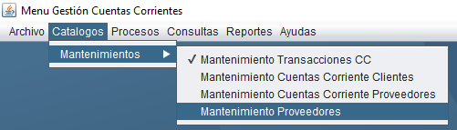
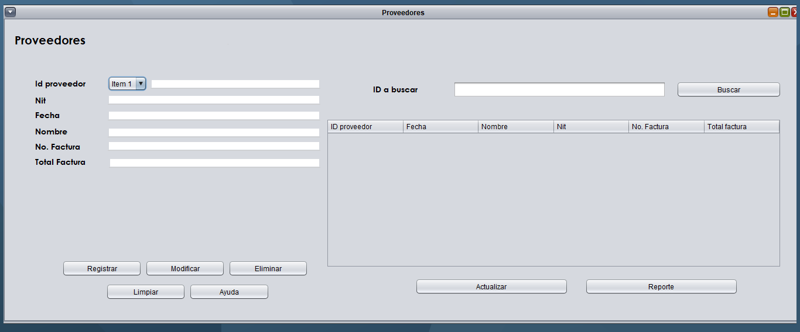

Capacitación Proveedor
Mantenimiento de Proveedores
Con el mantenimiento de Proveedores podemos registrar nuevos Proveedores con los siguientes botones:
Registrar - Modificar - Eliminar - Ayuda - Reporte - Buscar
Para realizar un registro tenemos que entrar a la parte superior donde diga "Catalogos" una vez realizado esto seleccionamos "Mantenimientos " y por ultimo seleccionamos "Mantenimiento de Cuentas Corrientes Clientes como lo muestra la siguiente imagen :

Una vez realizado los anteriores pasos podremos observar la ventana donde podemos ingresar todos los datos del Proveedor o realizar cambios de la data.
